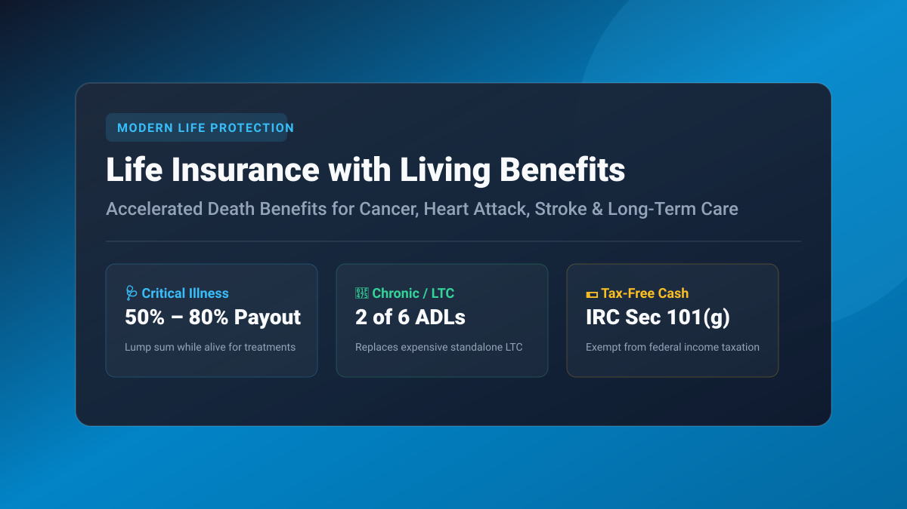

Key Takeaways at a Glance
- The Shift Away from "Death-Only" Policies: Modern life insurance policies can be utilized while alive to combat the #1 cause of personal US bankruptcy: catastrophic medical bills.
- The Three Health Triggers: Living benefits riders activate upon diagnosis of Terminal Illness (12–24 months), Critical Illness (heart attack, invasive cancer, stroke), or Chronic Illness (loss of 2 of 6 ADLs).
- Tax-Free Payouts: Under IRS Code Section 101(g), living benefit distributions up to $420+/day (or actual medical expenses) are 100% exempt from federal income tax.
- The Long-Term Care Alternative: Chronic illness riders provide a flexible, cost-effective substitute for hyper-expensive traditional standalone LTC policies that have experienced 50%+ rate hikes.

Calculate Your Term Life Coverage Baseline
Calculate your family’s exact income replacement and mortgage payoff protection needs using our Life Insurance Calculator Online.
- 1. What Are Living Benefits? Transforming Pure Death Protection
- 2. The 3 Diagnostic Triggers: Terminal, Critical & Chronic Illness
- 3. Mathematical Payout Example: How Acceleration Impacts Remaining Death Benefit
- 4. Chronic Illness Riders vs. Standalone Long-Term Care Insurance
- 5. Top Carriers Offering Built-In Living Benefits & Buyer Checklist
- Frequently Asked Questions
1. What Are Living Benefits? Transforming Pure Death Protection
For generations, life insurance suffered from a single psychological drawback: you had to die for your family to receive financial value. If you survived a massive heart attack or battled stage-3 colon cancer, your health insurance covered basic doctor bills, but did nothing to replace lost income, pay out-of-network travel expenses, or satisfy monthly mortgage payments.
Life Insurance with Living Benefits incorporates Accelerated Death Benefit (ADB) riders directly into the policy contract. If you suffer a major health catastrophe, the insurance company advances a substantial cash lump sum directly from your policy’s face value while you are still alive, allowing you to focus on survival rather than financial insolvency.
2. The 3 Diagnostic Triggers: Terminal, Critical & Chronic Illness
Living benefit riders are triggered by certified physician diagnoses falling into three statutory categories:
| Illness Category | Diagnostic Trigger Criteria | Typical Acceleration Range | Common Uses of Funds |
|---|---|---|---|
| Terminal Illness | Physician certifies life expectancy of 12 to 24 months or less. | Up to 90% – 100% of Death Benefit | Experimental clinical trials, debt relief, palliative care. |
| Critical Illness | Invasive cancer, heart attack, major stroke, kidney failure, major organ transplant, paralysis, or ALS. | 50% – 80% of Death Benefit (Actuarially discounted) | Replacing lost spouse wages, specialized out-of-state surgery, mortgage payments. |
| Chronic Illness | Inability to perform 2 of 6 Activities of Daily Living (ADLs) without assistance, or severe cognitive impairment (Alzheimer's / Dementia). | Monthly disbursements or lump sum (Up to statutory IRS daily caps) | In-home nurse care, assisted living facility memory care, home accessibility retrofits. |
3. Mathematical Payout Example: How Acceleration Impacts Remaining Death Benefit
How does advancing living benefits affect what your beneficiaries inherit later? Consider a real-world underwriting example:
Scenario: Mark, age 42, holds a $1,000,000 30-year term policy with living benefits. At age 48, he suffers a massive heart attack. His physician submits records confirming a severe critical illness.
- Acceleration Offer: The insurer calculates an actuarial acceleration factor based on his updated life expectancy and offers a $450,000 tax-free cash payout in exchange for accelerating $600,000 of his policy.
- Immediate Cash Received: Mark receives $450,000 directly via wire transfer to pay off his remaining mortgage and medical debts.
- Remaining Life Coverage: His policy remains active with a residual $400,000 death benefit payable to his wife upon his eventual passing, and his monthly premium decreases proportionally.
4. Chronic Illness Riders vs. Standalone Long-Term Care Insurance
Traditional standalone Long-Term Care (LTC) insurance has experienced massive failure in the United States over the past decade. Carriers severely under-priced claims in the 1990s, forcing them to raise premiums on elderly retirees by 50% to 150%, or exit the market entirely. Furthermore, if you paid standalone LTC premiums for 25 years and never needed nursing home care, all those premiums were forfeited.
Chronic Illness riders solve the "use-it-or-lose-it" trap. If you need in-home care or memory assistance, you tap the death benefit while alive. If you pass away peacefully in your sleep at age 85 without needing elder care, your beneficiaries receive 100% of the death benefit income tax-free.
5. Top Carriers Offering Built-In Living Benefits & Buyer Checklist
When shopping for term or permanent life insurance, ensure you select carriers that bundle comprehensive riders without upfront fees:
- National Life Group (NLG): The recognized pioneer in living benefits, offering full critical, chronic, and terminal riders on all term and indexed universal life policies.
- Mutual of Omaha: Includes chronic, critical, and terminal illness riders across term products with streamlined accelerated underwriting.
- Penn Mutual & Ameritas: Renowned for strong financial ratings (AM Best A+ or superior) and generous critical illness benefit formulas.
Frequently Asked Questions
What is life insurance with living benefits?
Life insurance with living benefits includes Accelerated Death Benefit (ADB) riders that allow policyholders to withdraw a substantial portion (typically 50% to 80%) of their policy's death benefit while still alive upon diagnosis of a qualifying terminal, critical, or chronic illness.
Are living benefit payouts taxed by the IRS?
Generally, no. Under Internal Revenue Code (IRC) Section 101(g), accelerated death benefits received by chronically or terminally ill individuals are treated as tax-free death benefits, exempt from federal income taxation.
Does adding living benefits increase term life insurance premiums?
Many premier mutual carriers (including Mutual of Omaha, Penn Mutual, and National Life Group) now bundle living benefit riders into term policies at zero additional upfront cost, calculating an actuarial discount only if and when you choose to accelerate a claim.